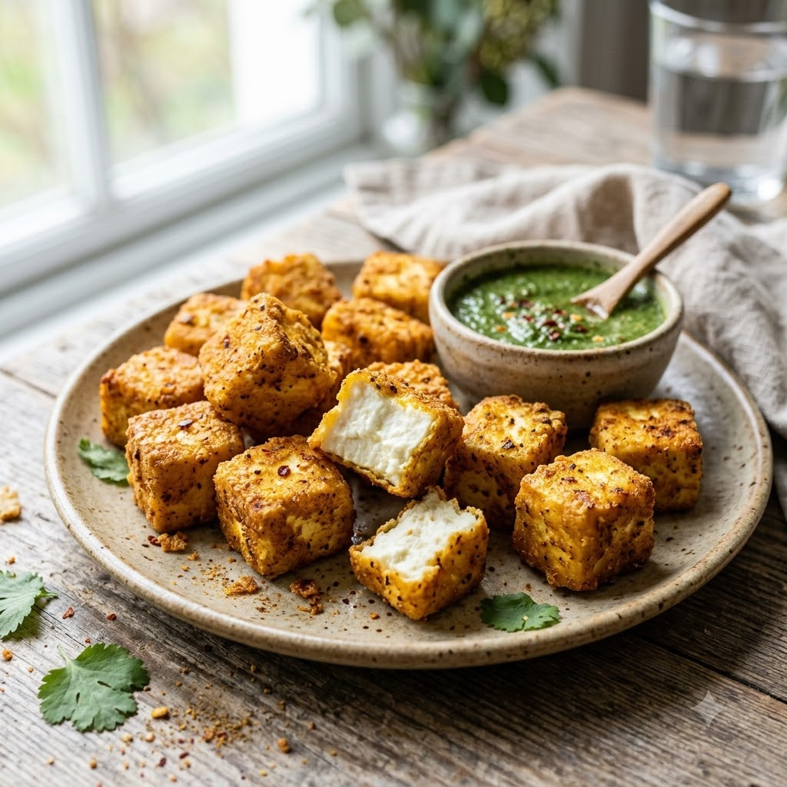

Crispy Paneer Bites (Airfryer Croutons)

Crispy Paneer Bites (Airfryer Croutons)
Airfryer – Fry 200°C 10 min — Serves 4
Gluten-Free • Vegetarian • High-Protein • Everyday
Ingredients
- 200g paneer, cut into small cubes
- 1 tbsp oil
- 1/2 tsp chilli flakes
- 1/4 tsp garlic (lehsun) powder
- Salt to taste
Method
1Preheat: Preheat the Airfryer to 200°C for 4 minutes before adding the food to the basket.
2Toss paneer cubes with oil, chilli flakes, garlic powder and salt.
3Arrange in a single layer in the basket, spaced apart.
4Air-fry at 200°C for 10 minutes, shaking halfway, until golden and crisp at the edges.
5Scatter warm over salads, soups or rice bowls in place of croutons.